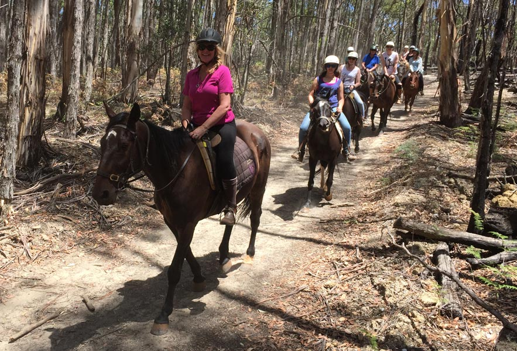

The goldfields has a wide range of sites and experiences for tourists, all in conveninet and inexpensive reach of Melbourne. Only a smattering of them have been realised to any signficant extent. They inlcude Sovereign Hill, Eureka Stockade and the wildlife Park in Ballarat, the art gallery in Bendigo, 'The Mill' in Castelmaine.
In cooperation with each other the smaller towns along the train line, like Maryborough, could leverage that and ADD to those experiences for tourists. The steam train loop and re-instated Maryborough to Castlemaine line would be integral to that.
Wagon & Coach Rides
One really obvious experience for tourists, that cities like Ballarat and Bendigo would struggle with but that the likes of Maryborough could EASILY provide, are wagon, stage coach and buggy rides. Both around the town center and even between it and the closer satellite towns.

How about trail rides around the lake and goldfields ruins?
